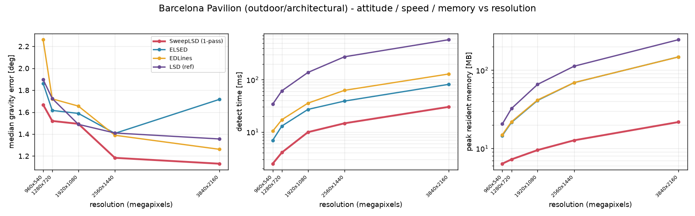

The streaming design buys O(width) memory, content-independent cost, and low latency. The question for an application is whether those survive to task accuracy.
Protocol. Real line datasets top out near 2 MP and upsampling only manufactures false edges, so the resolution claim cannot be tested downstream on real data. We instead render two photorealistic scenes — an indoor classroom and the outdoor Barcelona Pavilion — from 540p to 4K with the camera pose identical across resolutions and exact attitude ground truth. Each detector's segments feed the same calibrated Manhattan/gravity estimator, and we report the angle between the recovered and true gravity directions. The estimator recovers the orthogonal direction triad, then re-fits the vertical axis against its own inlier lines: as a triad member that axis is constrained orthogonal to the other two, and outdoors those are weakly determined — an architectural exterior offers few horizontal cues — so the constraint transfers their error onto gravity. Releasing it improves every detector here by 3–20×. The trade is scene-dependent and we do not take it on the real data below: in cluttered rooms all three axes are well supported, the constraint is a useful regulariser, and releasing it costs 0.07–0.1° of mean error on EuRoC.
Accuracy is preserved, not traded. Across the sweep the four detectors are within each other's noise on attitude, and they converge as resolution rises: outdoors the median gravity error falls from 0.51–0.75° at 540p to 0.06–0.09° at 4K, where all four sit within 0.03° of one another (SweepLSD 0.09°, ELSED 0.07°, EDLines 0.07°, LSD 0.06°); indoors the picture is the same with no consistent ordering (0.60–1.01° at 540p, 0.08–0.12° at 4K). SweepLSD leads at 540p outdoors and is last at 4K by 0.03° — a gap far below what 40 poses can resolve. Attitude accuracy is simply not a discriminator between these detectors; what differs is the speed and memory below, and those are not paid for in task accuracy. What the sweep does show sharply is that resolution pays: SweepLSD improves 5.7× from 540p to 4K (0.51°→0.09°).
Memory and speed diverge with resolution. At 4K (Barcelona Pavilion) SweepLSD detects in ≈30 ms against ELSED's 81 ms (2.7×) and EDLines' 128 ms, and — the decisive figure — holds a peak resident set of ≈22 MB against ELSED's and EDLines' ≈148 MB (6.8×) and the reference LSD's 245 MB (11×). SweepLSD's memory grows only 3.4× (6.4→21.7 MB) as the pixel count grows 16×, and most of the 22 MB is the input image itself — the working set is O(width), now shown at the task level and at a resolution real ground truth cannot reach. Downstream cost does not change this picture: the Manhattan-frame estimation that consumes the segments adds 5–6 ms at 4K for every detector (it scales with the number of surviving lines, not with pixels), so end-to-end the ratios compress only slightly — SweepLSD ≈36 ms against ELSED's ≈88 ms, 2.4× instead of 2.7×.

Real-time horizon lock. As an end-to-end demonstration we stabilise a 4K forward flight through the Pavilion (camera rolling ±20° and pitching ±12°) by counter-rotating and re-centring each frame with SweepLSD's per-frame attitude estimate (hybrid estimator, resolution-scaled minimum length, no temporal filtering). The attitude error has median 0.06° over the 150-frame flight (mean 0.06°, worst frame 0.15°): the estimated horizon (amber) sits on the true one (blue) closely enough that the two are hard to tell apart, while the raw feed tilts and pitches. The complete per-frame compute — detection plus attitude estimation — has a median of 31.9 ms (detection 30.7, estimation 1.2 on the ≈87 length-filtered lines; worst frame 45.2 ms), so the whole loop, not just the front end, runs at the 30 fps frame budget in the median on a single desktop core. Only rendering the stabilised output falls outside this figure: it is presentation, identical for every detector, and in a deployed system (a gimbal or crop window) it is not on the estimate's critical path.
Temporal smoothing is the obvious addition to a stabiliser, and we deliberately omit it: at these rotation rates an exponential moving average lags, and the lag dominates whatever jitter it suppresses. Smoothing the same estimates with α = 0.65 costs an order of magnitude — 0.06° → 0.63° median. Per-frame geometry this accurate is what makes the temporal term unnecessary, and omitting it is what keeps the demonstration single-frame, and so bounded-latency, end to end.
RAW | STABILIZED: detected segments (green), estimated horizon (amber), ground truth (blue); the attitude-indicator gizmo shows the estimated roll and pitch in real time. (direct video link if the embed does not play.)
Content-independent cost, made visible. The same 4K flythrough, run frame by frame against ELSED: both detectors see the same images and return essentially the same lines, but as the camera moves and the number of visible segments varies 2.2×, ELSED's per-frame detect time swings between 66 and 126 ms (σ = 15.3 ms) while SweepLSD holds a flat 26–35 ms band (σ = 3.0 ms, median 3.0× faster) near the 33 ms / 30 fps budget line — at 22 vs 148 MB peak memory. A frame deadline can be guaranteed, not just met on average.
Same scene, same lines — the per-frame latency band below draws itself as the flight progresses. (direct video link if the embed does not play.)
ELSED's medians track the others, but its error tail grows at 4K (p90 10.1°): its defaults target 640×480, so at 4K it over-splits foliage into short lines that survive the shared minimum length and pollute the inlier vote. At its design minimum length that tail returns to parity. The memory and speed gaps are independent of it. Speed ratios against the OpenCV-based baselines depend on the OpenCV build by ±20–30%; all four detectors here use one toolchain. In the latency video, per-frame times are the minimum over repeated runs (8 for SweepLSD, 3 for ELSED, same protocol) to strip OS scheduling jitter, and the vendored ELSED needed a one-line NaN guard to survive tilted 4K frames — an upstream bug that leaves its detections unchanged.
Synthesis isolates the resolution effect; two real visual-inertial datasets check that the single-frame attitude estimator survives real optics, motion blur, and imperfect scene verticality. The estimator is unchanged — single frame, monocular, geometry only, no temporal smoothing — scored against each dataset's metric ground truth.
| dataset | frames | median gravity error | <3° | throughput (1 core) |
|---|---|---|---|---|
| EuRoC MAV (752×480, 11 seq) | 26,540 | 0.73° | 87.8% | ≈284 FPS |
| TUM-VI (512² fisheye→pinhole, 6 rooms) | 15,393 | 0.96° | 88.5% | ≈511 FPS |
A second honest fact. TUM-VI ships both a native 1024² capture and an official 512² downscale of the same footage — a real 4× detail difference, not upsampling. Feeding the 4× finer imagery changes the pooled six-room accuracy by nothing (the 512² version in fact wins every metric by a hair: median 0.96 vs 1.01°), because the floor here is the scene's pseudo-vertical (≈0.8°) plus the ground-truth tilt (≈0.1°), not line localisation. High resolution pays off only when the task is localisation-limited — not on a task capped by scene geometry.
Same fair protocol as the vanishing-point study. Feed every detector's segments into the identical estimator, hyperparameters tuned per detector on a held-out room. At standard field of view (test rooms 2–6) SweepLSD has the best median (0.96°, <1° on 51.3% of frames) against ELSED 1.19°, EDLines 1.06°, reference LSD 1.06°, while detecting fastest (3.75 ms one-pass, 2.5× ELSED and 3.9× EDLines); at a wide 139° field of view the four converge to a near-tie (0.89–0.95°). As on vanishing points, task accuracy is at parity and the streaming design's speed and memory are the discriminators — now on handheld real data.
SweepLSD is at its best when the scene is structure-dominant (architecture, indoor Manhattan geometry, urban imagery), when the task needs line direction rather than absolute endpoint position (attitude, vanishing points, rotation), and — above all — when the deployment is high-resolution or memory-/power-constrained, where the O(width) working set and the content-independent, worst-case-flat per-pixel cost are worth the most. That is precisely the embedded, streaming-sensor, FPGA-oriented regime the original thesis targeted.
Three conditions push outside it: